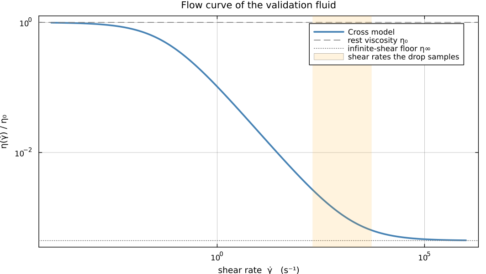

General-Exponent Carreau-Yasuda: Why Amplitude Perturbation Theory Fails,
and What Survives
Reid's theory gives the exact Newtonian damping rate $\lambda_l(\mathrm{Oh})$ and squared frequency $\omega_l^2(\mathrm{Oh})$ at any Ohnesorge number. The classical treatment builds a small-amplitude, Landau-style correction on top of that theory for the classical Carreau law, whose shape exponent is fixed at $a=2$. This page asks the harder question: does an analogous correction exist for the general Carreau-Yasuda law that the fitted validation fluid uses, with $a\approx0.743$ rather than 2?
For this fluid's fitted parameters, no. That is a quantitative statement about where this fluid sits on the Carreau-Yasuda curve rather than a general one about shear-thinning drops, and §2-§4 give the numbers behind it.
The negative result is not the whole story. Three general results (§6-§8) hold independently of it and of any fluid's specific parameters, and all three are tools a first-principles treatment would need.
Notation
| symbol | meaning |
|---|---|
| $\mathrm{Oh}_0$ | rest (zero-shear) Ohnesorge number of the real fluid |
| $\mathrm{Oh}_\infty$ | infinite-shear-rate Ohnesorge number, $=\mathrm{Oh}_0(1-\varepsilon_{ST})$ |
| $a$ | Carreau-Yasuda shape exponent ($\approx0.743$ here, not the classical 2) |
| $\mathcal{L}[U]$ | Reid's velocity operator, $U''-l(l+1)U/x^2+q^2U$ |
| $\dot\gamma$, $S$ | scalar shear-rate invariant, $\sqrt{2e_{ij}e_{ij}}$ |
| $\phi=\omega t$ | oscillation phase at a complex Reid root $q$ |
using Symbolics
using SpecialFunctions
using QuadGK
using DropSolverThe fitted parameters of the real validation fluid, and the two natural Newtonian anchors they define:
const OH0 = 57.371648873370795
const LAMBDA_C = 30507.34501244818
const A_SHAPE = 0.7430524574330837
const EPS_ST = 0.9995574839318364
const ETA_INF_RATIO = 1 - EPS_ST
const OH_INF = OH0 * ETA_INF_RATIO # = 0.025390.02538787648350609
The measured flow curve, with the band of shear rates an impact actually produces. The fluid is sampled in the middle of the thinning transition, far from either plateau – which is the root of everything below.
1. The exponent, not just its size, is the problem
The classical route works because $a=2$ is an even integer. The viscosity correction $(\lambda_c\dot\gamma)^2$ is then an analytic, Taylor-expandable function of the oscillation amplitude $\epsilon$, since $\dot\gamma=O(\epsilon)$ linearly in Reid's single-mode ansatz. For a general, non-integer exponent this breaks down completely: the analogous $(\lambda_c\dot\gamma)^a\sim|\epsilon|^{a}$ is not differentiable at $\epsilon=0$, only Hölder continuous there, and for $a<1$ it is actually larger than $\epsilon$ itself as $\epsilon\to0$.
Concretely, the ratio $|\epsilon|^{a}/|\epsilon|$ at $\epsilon=10^{-1},10^{-3},10^{-5},10^{-7}$ is
\[1.807,\quad 5.900,\quad 19.26,\quad 62.90\]
growing without bound as $\epsilon\to0$. There is no amplitude, however small, at which this correction is a small perturbation of a fixed integer-power hierarchy: it sits at a genuinely fractional order, between Reid's own $O(\epsilon)$ linear terms and the usual $O(\epsilon^2)$ geometric mode-coupling correction.
This alone does not doom a perturbative treatment. A fractional expansion parameter is unusual but not impossible. What actually closes off the small-amplitude route for this fluid is quantitative rather than structural, and that is what §2-§4 establish.
2. Anchoring at rest, $\mathrm{Oh}_0$, fails outright
A shear-thinning fluid's viscosity interpolates between two Newtonian limits: $\eta_0$ at rest and $\eta_\infty$ at infinite shear rate. Reid's characteristic equation gives the exact $\lambda_l(\mathrm{Oh})$, $\omega_l^2(\mathrm{Oh})$ at either, so both are legitimate places to anchor a correction. The rest anchor fails first, for a simple reason. At $\mathrm{Oh}_0\approx57.37$, every mode this solver resolves is heavily overdamped:
| $l$ | $\lambda_l$ | $\omega_l^2$ | $\lambda_l^2$ | |
|---|---|---|---|---|
| 2 | 203.8 | 7.48 | $4.2\times10^{4}$ | overdamped |
| 3 | 459.4 | 25.48 | $2.1\times10^{5}$ | overdamped |
| 5 | 1119 | 102.9 | $1.3\times10^{6}$ | overdamped |
| 10 | 3681 | 665.4 | $1.4\times10^{7}$ | overdamped |
$\lambda_l^2\gg\omega_l^2$ throughout, by three to five orders of magnitude: the root pair is real, there is no oscillation at all. A multiple-scales or envelope treatment needs a fast carrier wave to modulate, and at $\mathrm{Oh}_0$ there is none.
Separately: the shear rate at which the viscosity correction reaches even the 1% level for this fluid is $\dot\gamma\approx6.8\times10^{-8}$, far below any resolved mode velocity. So an expansion anchored at rest would be expanding about a state the fluid leaves immediately and never returns to.
3. Anchoring at infinite shear is better posed, but still not small
Define $\mathrm{Oh}_\infty\equiv\mathrm{Oh}_0(1-\varepsilon_{ST}) \approx0.02539$. Unlike $\mathrm{Oh}_0$, this anchor is comfortably underdamped: at $l=2$, $\lambda_2=0.1161$ and $\omega_2^2=7.952$, giving a quality factor $Q\approx12.1$. (Reid's oscillator convention is $\ddot A+2\lambda\dot A+\omega^2A=\text{forcing}$, so $Q=\omega/2\lambda$, not $\omega/\lambda$.) That is a genuine separation between the decay time and the oscillation period – exactly what $\mathrm{Oh}_0$ lacked.
But being well posed is not the same as being close. The question a perturbative correction actually needs answered is not "how far is $\mathrm{Oh}_{\mathrm{eff}}$ from a reference?" but "does the first-order Taylor expansion of Reid's exact relations about that reference reproduce their true values over the range this fluid's dynamics actually visits?" Checked directly against the exact, continuation-solved relations:
| $l$ | $\lambda$ error at $\mathrm{Oh}=0.03$ | $\lambda$ error at $\mathrm{Oh}=0.1$ | $\omega^2$ error at $\mathrm{Oh}=0.1$ |
|---|---|---|---|
| 2 | 0.12% | 8.2% | 0.25% |
| 3 | 0.16% | 11.9% | 0.81% |
| 5 | 0.21% | 16.9% | 1.43% |
| 10 | 0.30% | 25.9% | 1.52% |
Two things stand out. $\omega_l^2$ is nearly flat in $\mathrm{Oh}$ near $\mathrm{Oh}_\infty$, so its linear correction stays small even at high $l$ – a genuine asymmetry between the frequency and damping corrections' validity. $\lambda_l$ is not flat: at the low end of the operative band every mode is comfortably accurate, but by the high end the error has passed 25% at $l=10$. The same growing-with-$l$ curvature that broke the $\mathrm{Oh}_0$ anchor reappears here, and here it also grows across the operative band, not merely across modes.
Moving the anchor to some other "typical" $\mathrm{Oh}^\ast$ does not rescue this. The curvature at high $l$ sets in almost immediately away from any point in the operative range, so there is no interior anchor from which a single linearization covers the band.
4. Where the fluid actually lives: a live solver trace
The two preceding sections are properties of the standalone $\mathrm{Oh}_{\mathrm{eff}}$ formula. This one is a cross-check against the running solver. Reproducing the trajectory of $\mathrm{Oh}_{\mathrm{eff}}(t)$ for a real impact ($\mathrm{We}=0.7649$) shows two things.
First, the drop's effective Ohnesorge number revisits the neighbourhood of $\mathrm{Oh}_0$ at most once – the very first contact transient, before any resolved mode has developed real shear – and never again on later contact or lift-off cycles. Once excited, it is permanently pinned away from rest.
Second, and this is the point, "pinned away from $\mathrm{Oh}_0$" is not "close to $\mathrm{Oh}_\infty$". Post-transient, the ratio $\mathrm{Oh}_{\mathrm{eff}}/\mathrm{Oh}_\infty$ stays in the band $[1.85,\ 2.97]$: never at the infinite-shear plateau, never near the rest plateau, always a factor of two to three above $\mathrm{Oh}_\infty$. The dynamics lives in the transitional part of the Carreau-Yasuda curve, which is exactly the part no single Newtonian anchor describes.
5. Conclusion, and what follows from it
For this fluid's fitted parameters there is no single reference viscosity – rest, infinite shear, or anywhere between – about which a regular perturbation expansion of Reid's damping rate is uniformly valid across the modes this solver resolves. The physics genuinely lives in the fully nonlinear, transitional part of the Carreau-Yasuda curve. This is a quantitative fact about this fluid's $\lambda_c$ and $a$, not a universal statement about shear-thinning drops.
What follows from it matters more than the finding itself. The failure is specifically a failure of linearizing $\lambda_l(\mathrm{Oh})$ and $\omega_l^2(\mathrm{Oh})$. But those functions are already known exactly, for any $\mathrm{Oh}$, through Reid's characteristic equation. So the correct response is not to build a better linear correction: it is not to linearize that piece at all – to evaluate the exact relations directly at whatever effective Ohnesorge number a closure provides, which is exactly what DropSolver's Carreau-Yasuda extension does.
That part was never the weak point. The weak point is upstream of it, in how the closure produces a single scalar $\mathrm{Oh}_{\mathrm{eff}}$ in the first place. The rest of this page builds the tools that question needs.
6. Adjoint sensitivity: the boundary derivative without solving the ODE
Reid's velocity operator
\[\mathcal{L}[U] \;\equiv\; U'' - \frac{l(l+1)}{x^2}U + q^2U\]
has no first-derivative term, so it is formally self-adjoint on $(0,1)$ with the plain $L^2$ inner product – no weight function needed. The Lagrange identity,
\[W\,\mathcal{L}[U] - U\,\mathcal{L}[W] \;=\; \frac{d}{dx}\Bigl[\,W\,U' - W'\,U\,\Bigr],\]
is verified symbolically for abstract $U(x)$, $W(x)$, with bilinear concomitant $P[U,W]=WU'-W'U$.
That identity buys a shortcut for precisely the calculation a perturbation of Reid's problem needs – the boundary derivative of a particular solution, without solving the ODE:
sph_jl(l, z) = sqrt(pi / (2z)) * besselj(l + 0.5, z)
"""
adjoint_shortcut_Yprime1(l, q0, RHS)
For `Y` regular at `x=0`, satisfying `Y(1)=0`, and solving `L[Y] = RHS(x)`
at fixed wavenumber `q0`, returns `Y'(1)` -- using the regular homogeneous
solution `x*j_l(q0*x)` as the adjoint test function.
"""
adjoint_shortcut_Yprime1(l, q0, RHS) =
first(quadgk(t -> t * sph_jl(l, q0 * t) * RHS(t), 0.0, 1.0; rtol=1e-10)) / sph_jl(l, q0)Main.adjoint_shortcut_Yprime1In closed form, that is
\[\boxed{\; Y'(1) \;=\; \frac{1}{j_l(q_0)}\int_0^1 x\,j_l(q_0x)\,\mathrm{RHS}(x)\,dx \;}\]
and it reproduces direct integration of the ODE to better than $10^{-6}$ relative error, for three independent $(l,q_0,\mathrm{RHS})$ combinations spanning different modes and different $\mathrm{Oh}$ regimes.
Combined with Reid's BC1 ($U(1)=-1$, which is purely kinematic and so unaffected by any viscosity correction) and BC2, this reduces the search for the $O(\delta)$ shift in $q^2$ produced by any new forcing added to Reid's ODE – both stress boundary conditions included – to an ordinary linear solve. No further ODE integration is required at all.
7. The strain-rate field of Reid's actual viscous mode
Any first-principles shear-rate calculation must use Reid's actual viscous velocity profile
\[U(x) \;=\; C\,x\,j_l(qx) + \Pi_0\,x^{l+1},\]
not the inviscid potential-flow shape $r^lP_l(\cos\theta)$ that the closures of the preceding pages use. The two are not interchangeable, and the reason is structural rather than a matter of accuracy: Reid's own damping normalization comes from the homogeneous (Bessel) part of $U(x)$, which is the viscous correction to potential flow. Dropping it and then computing a viscous correction from what remains is inconsistent with Reid's theory already at zeroth order.
Writing $u_r=F(x)P_l(\cos\theta)$ with $F(x)\equiv U(x)/x^2$, and $u_\theta$ from the stream-function relation already used for BC2, the strain-rate components are
\[e_{rr}=F'(x)P_l(\mu),\qquad e_{\theta\theta}=\frac{1}{x}\partial_\theta u_\theta+\frac{u_r}{x},\]
\[e_{\varphi\varphi}=\frac{u_r+u_\theta\cot\theta}{x},\qquad e_{r\theta}=\frac12\left[x\,\partial_x\!\left(\frac{u_\theta}{x}\right) +\frac{1}{x}\partial_\theta u_r\right],\]
with $\mu\equiv\cos\theta$. Incompressibility, $e_{rr}+e_{\theta\theta}+e_{\varphi\varphi}=0$, is verified to floating-point precision for $l=2,\dots,8$ and for any radial profile $F(x)$ – it is a kinematic identity of the poloidal representation, so the assembled tensor is the strain rate of a genuinely incompressible flow before any Carreau-Yasuda physics enters.
8. The period-$\pi$ lemma
At $\mathrm{Oh}_\infty$ Reid's root $q$ is genuinely complex – a true damped oscillation, not a pure decay – so the physical strain field at phase $\phi=\omega t$ is $\mathrm{Re}[e_{ij}(x,\theta)e^{-i\phi}]$.
The natural first attempt at a shear-thinning correction is to evaluate everything at "one representative oscillation phase". That cannot be justified: the physical shape at a representative radius swings by roughly the same magnitude in both directions across one period, nowhere near constant. Any nonlinear function of this field – and a fractional power is emphatically nonlinear – depends on which phase was picked, unless the choice is justified by an actual time-average.
The lemma that resolves it:
Let $S\equiv\sqrt{2e_{ij}e_{ij}}$ be built from any single-frequency oscillating axisymmetric poloidal field. Then $S(\phi)$ is exactly periodic with period $\pi$, not $2\pi$, so its Fourier series over the full period contains only even harmonics: the coefficient at the fundamental $(m=1)$ is identically zero – for $S$ itself and for any function of $S$.
Proof. Each strain component satisfies $\mathrm{Re}(e_{ij}e^{-i\phi})=|e_{ij}|\cos(\phi-\arg e_{ij})$. Squaring, $|e_{ij}|^2\cos^2(\phi-\arg e_{ij}) =\tfrac12|e_{ij}|^2[1+\cos(2\phi-2\arg e_{ij})]$, which is manifestly invariant under $\phi\to\phi+\pi$. $S^2$ is a sum of such terms, hence itself period-$\pi$; and $S=\sqrt{S^2}\ge0$, along with any real function of $S$, inherits the period exactly – there is no branch ambiguity, since $S^2\ge0$ throughout. A period-$\pi$ function integrated against $\sin(m\phi)$ or $\cos(m\phi)$ over $[0,2\pi)$ vanishes identically for every odd $m$, because the two half-period copies enter with opposite sign and cancel. $\blacksquare$
Confirmed two independent ways. Numerically, $S^2(\phi+\pi)=S^2(\phi)$ to better than $10^{-10}$ at several independent $(x,\theta)$ points. And by direct Fourier projection of the actual Carreau-Yasuda correction shape $S^{-a}$ on a joint $200\times200$ $(\theta,\phi)$ grid, where the $m=1$ coefficient – both $\cos$ and $\sin$ – is zero to better than $10^{-10}$ relative to the $m=0$ channel, at every $\theta$ tested.
The consequence. Since no forcing resonant at the base mode's own frequency exists, the adjoint machinery of §6 – built for exactly this kind of resonant solvability condition – has nothing to act on at $m=1$. The leading temporal effect of any generalized-Newtonian correction is carried entirely by the $m=0$ channel: period-averaged, effectively steady. The $m=2$ channel is a distinct, second-harmonic parametric coupling – a different physical phenomenon, not addressed here.
Spatial leakage: one active mode forces every even degree
The same period-averaged correction shape, projected onto Legendre polynomials, shows a second mechanism – this one spatial. A single active mode $l=2$ spontaneously forces every even spherical-harmonic degree:
| $l'$ | 0 | 1 | 2 | 3 | 4 | 5 | 6 | 7 | 8 |
|---|---|---|---|---|---|---|---|---|---|
| leakage coefficient | 1.297 | $4\!\times\!10^{-11}$ | $-0.0418$ | $-2\!\times\!10^{-11}$ | 0.1023 | $3\!\times\!10^{-12}$ | $-0.0594$ | $3\!\times\!10^{-11}$ | 0.0949 |
Every even degree is genuinely nonzero; every odd degree vanishes to $10^{-11}$, by a parity property that is verified rather than assumed. The reason is elementary and unavoidable: raising a finite Legendre polynomial to a non-integer power does not, in general, stay within its own degree. A closure that assigns mode $l$ a viscosity from mode $l$'s own shape is discarding all of the $l'\neq l$ columns.
9. The genuinely open question: spatial homogenization
Because the $m=0$ channel is the leading one, and because a steady forcing is a valid input to §6's adjoint shortcut, that machinery is the right tool for the question that actually remains open. Replacing a spatially varying $\eta(x,\theta)$ with a single scalar $\mathrm{Oh}_{\mathrm{eff}}(t)$ is an uncontrolled effective-medium approximation unless the spatial variation is itself small. Is it?
Using the period-averaged shear-rate shape from §7-§8 over the drop's volume at $\mathrm{Oh}_\infty$, $l=2$, the shape varies by a factor of 2.25 between its minimum and maximum. Propagated through the Carreau-Yasuda exponent $a=0.743$, that is roughly a factor of 1.83 in local viscosity across the drop at a single instant.
That is smaller than the multiple-order-of-magnitude range $\mathrm{Oh}_{\mathrm{eff}}$ traverses over an impact in time – so the scalar approximation is not unreasonable. But a factor of nearly two is not small enough to treat as negligible either: the spatial variation is real, moderate, and not yet controlled.
10. Summary
- The classical $O(\epsilon^3)$ Carreau expansion does not extend to this fluid's fitted, non-integer exponent. No small-amplitude anchor – rest, infinite shear, or in between – supports a uniformly valid linear correction to $\lambda_l(\mathrm{Oh})$ across the modes this solver resolves.
- Reid's exact $\lambda_l(\mathrm{Oh})$, $\omega_l^2(\mathrm{Oh})$ should therefore be evaluated directly at whatever $\mathrm{Oh}_{\mathrm{eff}}(t)$ a closure provides, and never linearized – which DropSolver implements, via a fast tabulated version of exactly that evaluation.
- The genuinely open approximation in the current scheme is the collapse of a spatially varying $\eta(x,\theta,t)$ onto a single scalar $\mathrm{Oh}_{\mathrm{eff}}(t)$. It is quantified here at roughly a factor of two in local viscosity across the drop at a representative instant: real, moderate, and not yet controlled.
- The adjoint sensitivity shortcut (§6), the viscous strain-rate tensor (§7), and the period-$\pi$ lemma (§8) survive independently of all of the above. None depends on this fluid's specific parameters, and all three are the correct starting point for a future first-principles treatment – most plausibly a self-consistent, spatially resolved solve using the adjoint machinery as a Newton/Fréchet-derivative iteration step, rather than any further attempt at a closed-form amplitude equation.
Scope. This page does not implement that self-consistent solve; that is future work. It does not revisit the $m=2$ parametric channel. And it does not extend the strain-tensor or leakage calculations beyond $l=2$ and a single representative radius. What it does establish is precisely which of the natural next steps work, which do not, and why – for this fluid specifically.
This page was generated using Literate.jl.